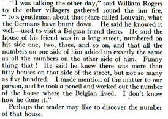
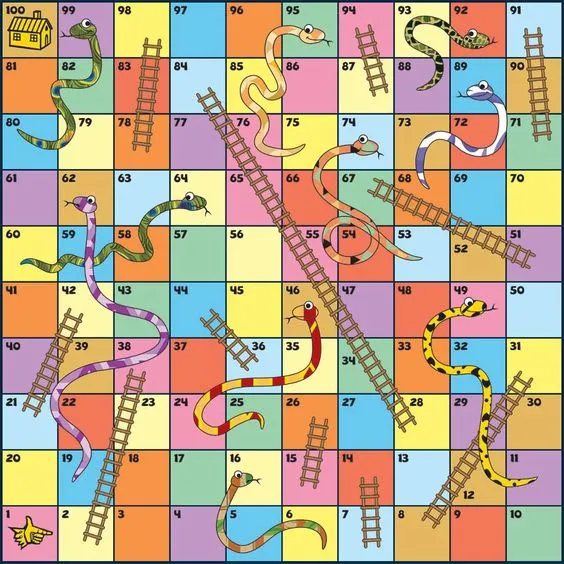

class: center, middle # Orientation / Introduction to R ## Statistics I — Data Exploration ### Deepayan Sarkar <h1 onclick='document.documentElement.requestFullscreen();' style='cursor: pointer;'> <svg xmlns='http://www.w3.org/2000/svg' width='16' height='16' fill='currentColor' class='bi bi-arrows-fullscreen' viewBox='0 0 16 16'> <path fill-rule='evenodd' d='M5.828 10.172a.5.5 0 0 0-.707 0l-4.096 4.096V11.5a.5.5 0 0 0-1 0v3.975a.5.5 0 0 0 .5.5H4.5a.5.5 0 0 0 0-1H1.732l4.096-4.096a.5.5 0 0 0 0-.707zm4.344 0a.5.5 0 0 1 .707 0l4.096 4.096V11.5a.5.5 0 1 1 1 0v3.975a.5.5 0 0 1-.5.5H11.5a.5.5 0 0 1 0-1h2.768l-4.096-4.096a.5.5 0 0 1 0-.707zm0-4.344a.5.5 0 0 0 .707 0l4.096-4.096V4.5a.5.5 0 1 0 1 0V.525a.5.5 0 0 0-.5-.5H11.5a.5.5 0 0 0 0 1h2.768l-4.096 4.096a.5.5 0 0 0 0 .707zm-4.344 0a.5.5 0 0 1-.707 0L1.025 1.732V4.5a.5.5 0 0 1-1 0V.525a.5.5 0 0 1 .5-.5H4.5a.5.5 0 0 1 0 1H1.732l4.096 4.096a.5.5 0 0 1 0 .707z'/> </svg> </h1> --- <div> $$ \newcommand{\sub}{_} $$ </div> # Welcome to Statistics I: Data Exploration * We encounter "data" all around us * We are expected to make "decisions" based on this data -- * This is not an easy task! -- * Skills that can help * Mathematics * Probability * Computation * Statistics --- # Our mission in this course * Explore what data can look like through examples * Learn some tools that can help us gain "insight" from data --- # Course details * Website .center[ <https://deepayan.github.io/BSDS/> ] <!-- * Click on [Statistics I: Data Exploration](https://deepayan.github.io/BSDS/2024-01-DE/) --> -- * Grading scheme * Quizzes / assignments: 20% * Midterm exam: 30% * Final exam: 50% -- * First week's task: Fill up [this survey](https://forms.gle/YanVu8xS8gHBxLqv5) --- class: center middle # Questions? --- # Software * Software makes our task much easier -- - Popular data analysis software: Excel, R, Python, Julia -- - Our goal is to become _programmers_ rather than _users_ - R, Python, and Julia are all good choices for this (Excel is not) -- - We will focus on R in this course --- # Tentative plan: today - List some mathematical problems - Introduction to R -- - Your assigment for the first week - Install R and RStudio on your own computers - Try to use R to solve some of the problems stated - Report on your progress in the next class -- - Next week: Start looking at data --- class: center, middle # Some Mathematical Problems --- # Divisors of numbers - Supose you are given a natural number $n \in \mathbb{N}$ - Is $n$ a prime number? -- - Is $n$ a [perfect](https://en.wikipedia.org/wiki/Perfect_number) number? -- - Examples <div> \begin{eqnarray*} 6 &=& 1 + 2 + 3 \cr 28 &=& 1 + 2 + 4 + 7 + 14 \cr 496 &=& 1 + 2 + 4 + 8 + 16 + 31 + 62 + 124 + 248 \end{eqnarray*} </div> -- - Find the [aliquot sum](https://en.wikipedia.org/wiki/Aliquot_sum) of $n$ $$ s(n) = \sum\limits\sub{d \vert n, d \neq n} d $$ --- # Taxicab number: 1729 - Famously identified by Ramanujan as the > smallest integer that can be expressed as a sum of two positive integer cubes in 2 distinct ways $$1729 = 1^3 + 12^3 = 9^3 + 10^3$$ -- - What is next such number? - And the next, and so on? --- # The house number problem - In 1914, Ramanujan and Prasanta Mahalanobis (then a student) were staying together in London - Mahalanobis read a [problem](images/house-problem-fullpage.jpg) in the Strand magazine that he posed to Ramanujan </img> --- # The house number problem - In 1914, Ramanujan and Prasanta Mahalanobis (then a student) were staying together in London - Mahalanobis read a [problem](images/house-problem-fullpage.jpg) in the Strand magazine that he posed to Ramanujan - In mathematical terms, the problem is to find a pair of integers $(m, n)$ such that $50 < m < 500$ and $$ 1 + 2 + \dotsc + (n-1) = (n+1) + (n+2) + \dotsc + m $$ -- - Ramanujan of course found an elegant solution that you can read about [here](https://bhavana.org.in/timeless-geniuses-celestial-clocks-and-continued-fractions/) - Can _you_ find the solution? - Are there other solutions when there are no bounds on $m$? --- # The birthday problem - Probability $p(n)$ of no common birthdays in a group of $n$ people -- - Exact answer $$p(n) = \left(1 - \frac{1}{365} \right) \left(1 - \frac{2}{365} \right) \dotsm \left(1 - \frac{n-1}{365} \right)$$ - Approximate answer (why?) $$p(n) = \left(1 - \frac{1}{365} \right)^{\frac{n(n-1)}{2}}$$ -- - How do we calculate for specific $n$? - How good is the approximation? - What if birthdays are not equally likely? --- # A more complicated experiment: Snakes and Ladders - How many throws of the dice does it take to reach the end? </img> -- - This is a "random" experiment - Answer depends on sequence of dice throws - Can we calculate "average" number of throws needed? - More generally, "distribution" of number of throws? --- class: center, middle # The R Programming Environment --- # Why R? - [Free](https://en.wikipedia.org/wiki/Free_software_movement) and [Open Source](https://en.wikipedia.org/wiki/The_Open_Source_Definition) - Popular - Easy to try out on your own -- - Python and Julia are other good alternatives --- # Interacting with R * R is most commonly used as a [REPL](https://en.wikipedia.org/wiki/Read-eval-print_loop) (Read-Eval-Print-Loop) * When it is started, R waits for user input -- * User inputs expression -- * R evaluates and prints result * Waits for more input -- * Julia and Python have the same REPL interface * Several _interfaces_ are available to help in this process * Recommended interface: [_RStudio_](https://posit.co/products/open-source/rstudio/) -- * Another popular interface: [_Jupyter_](https://jupyter.org/) (named after Julia, Python, R) * Available online (with a Google account) as [Google Colab](https://colab.research.google.com/) <!-- # Installing R and RStudio --> <!-- * Go to <https://cran.icts.res.in/> (or choose a [mirror](https://cran.r-project.org/mirrors.html) first) --> <!-- * Follow instructions depending on your platform (Windows for most of you) --> <!-- * For RStudio, go to <https://posit.co/download/rstudio-desktop/> --> --- # Try to install R and RStudio! * R is available from <https://www.r-project.org> * [RStudio](https://posit.co/download/rstudio-desktop/) is available from [Posit](https://posit.co/) --- # Running R * Once installed, you can start RStudio to get something like this: ``` R version 4.3.1 (2023-06-16) -- "Beagle Scouts" Copyright (C) 2023 The R Foundation for Statistical Computing Platform: x86_64-apple-darwin20 (64-bit) R is free software and comes with ABSOLUTELY NO WARRANTY. You are welcome to redistribute it under certain conditions. Type 'license()' or 'licence()' for distribution details. Natural language support but running in an English locale R is a collaborative project with many contributors. Type 'contributors()' for more information and 'citation()' on how to cite R or R packages in publications. Type 'demo()' for some demos, 'help()' for on-line help, or 'help.start()' for an HTML browser interface to help. Type 'q()' to quit R. > ``` * The `>` represents a _prompt_ indicating that R is waiting for input. * The difficult part is to learn what to do next --- # The R REPL essentially works like a calculator ```r 34 * 23 + 10 ``` ``` [1] 792 ``` -- ```r 27 + 1 / 7 ``` ``` [1] 27.14286 ``` -- ```r 2^10 # power ``` ``` [1] 1024 ``` -- ```r 28 %% 6 # modulus ``` ``` [1] 4 ``` -- ```r (1 - 1 / 365) * (1 - 2 / 365) * (1 - 3/365) # p(4) - birthday probability ``` ``` [1] 0.9836441 ``` --- layout: true # R supports mathematical functions --- ```r sqrt(5 * 125) ``` ``` [1] 25 ``` ```r sin(pi / 3) ``` ``` [1] 0.8660254 ``` ```r sin(pi / 3)^2 + cos(pi / 3)^2 ``` ``` [1] 1 ``` --- layout: false # Variables and functions * All examples so far use explicit values (like a calculator) * But R is much more: it is a full programming language * Two basic features: variables and functions --- # R supports variables ```r x <- 2 # assignment can be done using <- y = 10 # it can also be done using = x^y ``` ``` [1] 1024 ``` ```r y^x ``` ``` [1] 100 ``` ```r factorial(y) ``` ``` [1] 3628800 ``` --- # R has functions * Most operations are performed using functions * We have already seen some examples * A function is usually called by name, followed by arguments in parentheses ```r choose(y, x) ``` ``` [1] 45 ``` ```r sqrt(x) ``` ``` [1] 1.414214 ``` --- # R has functions and operators * Many operations are done using _operators_ ```r x + y ``` ``` [1] 12 ``` ```r x * y ``` ``` [1] 20 ``` -- * These are actually also functions ```r `+`(x, y) ``` ``` [1] 12 ``` ```r `*`(x, y) ``` ``` [1] 20 ``` --- layout: false # Vectors * All calculations so far have been with ‘scalar’ numbers * Computations often involve a _collection_ of numbers * Example: sum, mean, median, ... -- * The data structure we use for this is called a _vector_ * Also sometimes called _arrays_ in other programming languages --- # A simple way to generate vectors * The `seq()` function or the `:` operator ```r x:y ``` ``` [1] 2 3 4 5 6 7 8 9 10 ``` ```r seq(x, y) ``` ``` [1] 2 3 4 5 6 7 8 9 10 ``` -- * `seq()` has more options ```r seq(x, y, by = 0.1) ``` ``` [1] 2.0 2.1 2.2 2.3 2.4 2.5 2.6 2.7 2.8 2.9 3.0 3.1 3.2 3.3 3.4 [16] 3.5 3.6 3.7 3.8 3.9 4.0 4.1 4.2 4.3 4.4 4.5 4.6 4.7 4.8 4.9 [31] 5.0 5.1 5.2 5.3 5.4 5.5 5.6 5.7 5.8 5.9 6.0 6.1 6.2 6.3 6.4 [46] 6.5 6.6 6.7 6.8 6.9 7.0 7.1 7.2 7.3 7.4 7.5 7.6 7.7 7.8 7.9 [61] 8.0 8.1 8.2 8.3 8.4 8.5 8.6 8.7 8.8 8.9 9.0 9.1 9.2 9.3 9.4 [76] 9.5 9.6 9.7 9.8 9.9 10.0 ``` --- layout: true # Another simple way to generate vectors: Simulation --- * Real data will usually need to be imported from some external source (later) * Easy way to generate fake data: use a random number generator -- * Example: `sample()` to simulate throws of a die ```r sample(1:6) ``` ``` [1] 3 4 6 1 2 5 ``` -- ```r sample(1:6, 20) ``` ``` Error in sample.int(length(x), size, replace, prob): cannot take a sample larger than the population when 'replace = FALSE' ``` -- ```r sample(1:6, 20, replace = TRUE) ``` ``` [1] 4 5 5 2 1 5 2 6 4 5 3 3 1 3 1 6 3 1 5 6 ``` --- layout: true # Function arguments --- * Functions have named input arguments * Usually easy to identify using `str()` ```r str(sample) ``` ``` function (x, size, replace = FALSE, prob = NULL) ``` * Default choice is to sample _without replacement_ * For more details, try running `help(sample)` --- layout: false # Application: Birthday problem simulation * To do anything with a vector, we usually first assign it to a variable ```r x <- sample(1:365, 71) ``` -- * We can _print_ the vector (by just typing its name) ```r x ``` ``` [1] 15 235 91 347 282 94 22 62 295 186 157 190 43 165 348 149 301 29 333 [20] 130 225 51 218 362 221 352 61 275 86 179 71 255 4 110 271 107 81 258 [39] 297 199 27 206 122 299 286 312 268 280 195 92 237 340 303 259 253 97 1 [58] 360 329 344 215 339 328 358 156 146 40 337 185 204 324 ``` -- - What does this tell us? - Nothing useful, unless we repeat this many times - We will come back to this later --- # Application: Birthday problem exact calculation - Remember, we want to calculate $$p(71) = \left(1 - \frac{1}{365} \right) \left(1 - \frac{2}{365} \right) \dotsm \left(1 - \frac{70}{365} \right)$$ - We can at least easily generate the varying part of these terms ```r x <- 1:70 x ``` ``` [1] 1 2 3 4 5 6 7 8 9 10 11 12 13 14 15 16 17 18 19 20 21 22 23 24 25 [26] 26 27 28 29 30 31 32 33 34 35 36 37 38 39 40 41 42 43 44 45 46 47 48 49 50 [51] 51 52 53 54 55 56 57 58 59 60 61 62 63 64 65 66 67 68 69 70 ``` --- # Summary functions * We can now call various standard _summary_ functions that compute various statistics ```r sum(x) ``` ``` [1] 2485 ``` ```r length(x) ``` ``` [1] 70 ``` ```r prod(x) ``` ``` [1] 1.197857e+100 ``` -- * But none of these are immediately useful --- layout: true # Vectorized functions --- * Some R functions operate on vectors _elementwise_ * In fact, most standard mathematical functions and operators are _vectorized_ --- * Example: Divide each element of `x` by 365 ```r x / 365 ``` ``` [1] 0.002739726 0.005479452 0.008219178 0.010958904 0.013698630 0.016438356 [7] 0.019178082 0.021917808 0.024657534 0.027397260 0.030136986 0.032876712 [13] 0.035616438 0.038356164 0.041095890 0.043835616 0.046575342 0.049315068 [19] 0.052054795 0.054794521 0.057534247 0.060273973 0.063013699 0.065753425 [25] 0.068493151 0.071232877 0.073972603 0.076712329 0.079452055 0.082191781 [31] 0.084931507 0.087671233 0.090410959 0.093150685 0.095890411 0.098630137 [37] 0.101369863 0.104109589 0.106849315 0.109589041 0.112328767 0.115068493 [43] 0.117808219 0.120547945 0.123287671 0.126027397 0.128767123 0.131506849 [49] 0.134246575 0.136986301 0.139726027 0.142465753 0.145205479 0.147945205 [55] 0.150684932 0.153424658 0.156164384 0.158904110 0.161643836 0.164383562 [61] 0.167123288 0.169863014 0.172602740 0.175342466 0.178082192 0.180821918 [67] 0.183561644 0.186301370 0.189041096 0.191780822 ``` --- * Example: Calculate `1 - x / 365` elementwise ```r 1 - x / 365 ``` ``` [1] 0.9972603 0.9945205 0.9917808 0.9890411 0.9863014 0.9835616 0.9808219 [8] 0.9780822 0.9753425 0.9726027 0.9698630 0.9671233 0.9643836 0.9616438 [15] 0.9589041 0.9561644 0.9534247 0.9506849 0.9479452 0.9452055 0.9424658 [22] 0.9397260 0.9369863 0.9342466 0.9315068 0.9287671 0.9260274 0.9232877 [29] 0.9205479 0.9178082 0.9150685 0.9123288 0.9095890 0.9068493 0.9041096 [36] 0.9013699 0.8986301 0.8958904 0.8931507 0.8904110 0.8876712 0.8849315 [43] 0.8821918 0.8794521 0.8767123 0.8739726 0.8712329 0.8684932 0.8657534 [50] 0.8630137 0.8602740 0.8575342 0.8547945 0.8520548 0.8493151 0.8465753 [57] 0.8438356 0.8410959 0.8383562 0.8356164 0.8328767 0.8301370 0.8273973 [64] 0.8246575 0.8219178 0.8191781 0.8164384 0.8136986 0.8109589 0.8082192 ``` --- * Birthday Problem Calculation: now take product ```r prod(1 - x / 365) ``` ``` [1] 0.0006792468 ``` --- * What about for 23 people? ```r x <- 1:22 prod(1 - x / 365) ``` ``` [1] 0.4927028 ``` --- layout: false # Defining new functions: Exact birthday probability ```r p <- function(n) { x <- 1:(n-1) prod(1 - x / 365) } ``` -- ```r p(20) ``` ``` [1] 0.5885616 ``` ```r p(21) ``` ``` [1] 0.5563117 ``` ```r p(22) ``` ``` [1] 0.5243047 ``` ```r p(23) ``` ``` [1] 0.4927028 ``` --- # Defining new functions: Approximate birthday probability ```r p1 <- function(n) { S <- n * (n-1) / 2 (1 - 1 / 365)^S } ``` ```r p1(20) ``` ``` [1] 0.5937705 ``` ```r p1(21) ``` ``` [1] 0.5620682 ``` ```r p1(22) ``` ``` [1] 0.5306008 ``` ```r p1(23) ``` ``` [1] 0.4995228 ``` --- # Defining new functions: Key points to remember * Functions consist of one or more expressions / statements * Expressions are run __sequentially__ * Variables in expressions must have been defined earlier (last assigned value is used) * Arguments of a function can be used as variables within the function * Last evaluated expression is the "return" value --- layout: true # Birthday problem by simulation --- ```r d <- sample(1:365, 23, replace = TRUE) d ``` ``` [1] 272 156 68 85 69 61 307 307 125 32 123 84 280 288 177 10 12 334 246 [20] 346 181 90 86 ``` * We need to determine whether there are duplicates * Several options --- * Option 1: Use the `duplicated()` function with logical summary function `any()` ```r duplicated(d) ``` ``` [1] FALSE FALSE FALSE FALSE FALSE FALSE FALSE TRUE FALSE FALSE FALSE FALSE [13] FALSE FALSE FALSE FALSE FALSE FALSE FALSE FALSE FALSE FALSE FALSE ``` ```r any(duplicated(d)) ``` ``` [1] TRUE ``` --- * Option 2: Use the `duplicated()` function and count duplicates ```r duplicated(d) ``` ``` [1] FALSE FALSE FALSE FALSE FALSE FALSE FALSE TRUE FALSE FALSE FALSE FALSE [13] FALSE FALSE FALSE FALSE FALSE FALSE FALSE FALSE FALSE FALSE FALSE ``` ```r sum(duplicated(d)) ``` ``` [1] 1 ``` ```r sum(duplicated(d)) > 0 ``` ``` [1] TRUE ``` --- * Option 3: Use the `unique()` function and count unique birthdays ```r unique(d) ``` ``` [1] 272 156 68 85 69 61 307 125 32 123 84 280 288 177 10 12 334 246 346 [20] 181 90 86 ``` ```r length(unique(d)) ``` ``` [1] 22 ``` ```r length(unique(d)) < length(d) ``` ``` [1] TRUE ``` --- * Pick one and simulate result using a function ```r sim_birthday <- function(n) { d <- sample(1:365, n, replace = TRUE) length(unique(d)) == length(d) # TRUE if all distinct } ``` --- * Pick one and simulate result using a function ```r sim_birthday(23) ``` ``` [1] TRUE ``` ```r sim_birthday(23) ``` ``` [1] TRUE ``` ```r sim_birthday(23) ``` ``` [1] FALSE ``` ```r sim_birthday(23) ``` ``` [1] FALSE ``` ```r sim_birthday(23) ``` ``` [1] FALSE ``` --- * Use `replicate()` to repeat this process many times ```r replicate(20, sim_birthday(23)) ``` ``` [1] FALSE FALSE TRUE FALSE FALSE TRUE TRUE TRUE FALSE FALSE TRUE FALSE [13] TRUE TRUE TRUE TRUE TRUE FALSE FALSE FALSE ``` ```r s <- replicate(50000, sim_birthday(23)) sum(s) / length(s) ``` ``` [1] 0.49194 ``` --- * Observed proportion should ‘converge’ to true probability * This is known as the Law of Large Numbers * Does simulated data show this behaviour? --- layout: false # Summary * R can be used like an advanced calculator with variables * Main features: Vectorized arithmetic, functions * I have omitted many details, which we can clarify in the tutorials -- * We have discussed the birthday problem -- * Practice assignments - Recreate what we have done in R - see <https://deepayan.github.io/BSDS/2024-01-DE/> - The taxicab number problem - The house number problem --- class: center middle # Questions? --- class: center, middle # Appendix --- # Algorithms - The fundamental building block of computer programs are algorithms - An algorithm is essentially a set of instructions to solve a problem - Algorithms usually require some inputs - Instructions are executed sequentially, finally resulting in an output (also called _return value_) - You can think of an algorithm as a recipe (inputs: ingredients, output: food!) --- layout: true # Example: is a given number $n$ prime? --- - Basic idea: see if $n$ is divisible by any number between $2$ and $n-1$ - Obviously, enough to check whether $n$ is divisible by any number between $2$ and $\sqrt{n}$ - Intuitively, the second approach is more "efficient" - Also, we can stop as soon as we find the first divisor --- - Simple algorithms are often easy to understand as a _flowchart_  --- - But we will usually write algorithms in the form of _pseudo-code_ as follows: .algorithm[ .name[`is\_prime(n)`] i := 2 __while__ (i $\leq$ sqrt(n)) { __if__ (n mod i == 0) { __return__ FALSE } i := i + 1 } __return__ TRUE ] - Here we skip checking whether $n > 1$ (and that it is an integer) --- layout: true # How to interpret an algorithm? --- - The meaning of this algorithm / pseudo-code should be more or less obvious - Assumes availability of certain basic operators / functions (mod, sqrt) - We often employ some _conventions_ and use some _structures_ in pseudo-code - For example, .algorithm[ .name[`is\_prime(n)`] i := 2 // variable assignment __while__ (i $\leq$ sqrt(n)) { // loop while condition holds __if__ (n mod i == 0) { // branch if condition holds __return__ FALSE // exits with output value } // end of blocks within loops, branches, etc. i := i + 1 // update variable value } __return__ TRUE ] --- - It is important to make sure that an algorithm makes sense - Steps are executed sequentially, so the sequence must be clear - It must be possible to evaluate each step - All variables used must have been defined in a previous step - It is OK to call other functions (or algorithms), but they must be clearly defined - It is even OK for an algorithm to call itself (this is known as _recursion_) --- layout: true # Pseudo-code --- - The general structure of algorithms is derived from a language called [ALGOL](https://en.wikipedia.org/wiki/ALGOL) - However, there are no fixed rules that pseudo-code must follow - An alternative form of our `is_prime` algorithm could be: .algorithm[ .name[`is\_prime(n)`] i = 2 // different assignment operator __while__ i $\leq$ sqrt(n) // end of loop indicated by indentation __if__ n mod i == 0 __return__ FALSE i = i + 1 __return__ TRUE ] --- - Another form could be: .algorithm[ .name[`is\_prime(n)`] i $\leftarrow$ 2 // yet another assignment operator __while__ i $\leq$ sqrt(n) // end of loop indicated by __end__ keyword __if__ n mod i == 0 __return__ FALSE __end__ i $\leftarrow$ i + 1 __end__ __return__ TRUE ] - Any of these forms are fine as long as - the steps of the algorithm are clearly specified - the essential ideas are expressed without ambiguity --- layout: true # Functions and control flow structures --- * The main building blocks of our programs are going to be functions * Functions are concrete implementations of algorithms * Functions usually - have one or more input arguments, - perform some computations, possibly calling other functions, and - return one or more output values. * The second step is the main contribution of a function -- * Usually a programming language will already have many built-in functions * These can be called by other functions * Knowing what is available is an essential part of "learning" a language <!-- * Additional libraries or packages will provide more standard functions --> --- * The standard model for performing computations is __sequential execution__ * In other words, a function executes a set of instructions in a specified sequence * Some control flow structures may be used to create branches or loops in the flow of execution --- * Briefly, the main ingredients used are - Declaration of variables (implicit in some languages) - Evaluation of expressions. _Can involve variables provided they have been defined in an earlier step_ - Assignment to variables (to store intermediate results for later use) - Logical tests (equal?, less than?, greater than?, is more input available?) - Logical operations (AND, OR, NOT, XOR) - Branching — take different paths based on result of a logical operation (if-then-else) - Loops — repeat sequence of steps, a fixed number of times, or while a condition holds (for / while) -- * The details of how variables store values, and who can access them (scope) are important * But we will not worry about these issues for now --- layout: false # Common operators (may have language-specific variants) - _Mathematical operators_: - `+` (addition) - `*` (multiplication) - `/` (division — possibly integer division) - `^` (power) - `%` (the modulo operation) - _Logical operators_: - `&` (AND) - `|` (OR) - `!` (NOT) - _Comparisons_: - `==` (equality) - `!=` ($\neq$) - `<`, `>` (strictly less than or greater than) - `<=` `>=` ($\leq$, $\geq$) - _Mathematical functions_: `round, floor, ceil, abs, sqrt, exp, log, sin, cos, ...` --- # Practical implementation: programming languages * Some standard languages suitable for structured programming are - [C](https://en.wikipedia.org/wiki/C_%28programming_language%29) (compiled) - [C++](https://en.wikipedia.org/wiki/C_%28programming_language%29) (compiled) - [R](https://en.wikipedia.org/wiki/R_%28programming_language%29) (interpreted) - [Python](https://en.wikipedia.org/wiki/Python_%28programming_language%29) (interpreted) - [Julia](https://en.wikipedia.org/wiki/Julia_%28programming_language%29) (interpreted) * There are also many others with various relative strengths and weaknesses --- # Example: The `is_prime` algorithm in various languages * We will demonstrate with a slight modification to use only integer arithmetic (avoid square root) .algorithm[ .name[`is\_prime(n)`] i := 2 __while__ (i * i $\leq$ n) { __if__ (n mod i == 0) { __return__ FALSE } i := i + 1 } __return__ TRUE ] --- # Example: The `is_prime` algorithm in various languages * Implemented in C, the algorithm would look like this: ```c int is_prime_c(int n) { int i = 2; while (i * i <= n) { if (n % i == 0) { return 0; } i = i + 1; } return 1; } ``` * C is a compiled language, so actually running this code involves some additional work * Note that all variable _types_ need to be explicitly declared * This includes the types of function arguments (inputs) and return value (output) --- # Example: The `is_prime` algorithm in various languages * The same algorithm would look like this in R: ```r is_prime_r <- function(n) { i <- 2 while (i * i <= n) { if (n %% i == 0) { return (FALSE) } i <- i + 1 } return (TRUE) } ``` * The basic structure is very similar, but with some differences: - The assignment operator is different (but `=` also works in R) - The function declaration looks like a variable assignment - The modulo operator is `%%` instead of `%` - Uses `TRUE` and `FALSE` instead of `1` and `0` for logical values - Statements do not end with a semicolon (although they could) - Variable types are not declared - The return value must be put in parentheses --- # Example: The `is_prime` algorithm in various languages * We can call this function after starting R and copy-pasting the function definition ```r is_prime_r(4) ``` ``` [1] FALSE ``` ```r is_prime_r(10) ``` ``` [1] FALSE ``` ```r is_prime_r(100) ``` ``` [1] FALSE ``` ```r is_prime_r(101) ``` ``` [1] TRUE ``` --- # Example: The `is_prime` algorithm in various languages * The implementation looks a little different in Python: ```python def is_prime_py(n): i = 2 while i * i <= n: if n % i == 0: return 0; i = i + 1 return 1 ``` * The main difference is in how code blocks are defined: - start with a colon (`:`) - end is defined by indentation (amount of space in the beginning) * Changing indentation will change meaning of code, which does not happen in C or R * However, code in all languages _should be indented properly for readability_ --- # Example: The `is_prime` algorithm in various languages * Again, we can start python, define the function, and run the following code ```python print(is_prime_py(4)) ``` ``` 0 ``` ```python print(is_prime_py(10)) ``` ``` 0 ``` ```python print(is_prime_py(100)) ``` ``` 0 ``` ```python print(is_prime_py(101)) ``` ``` 1 ```